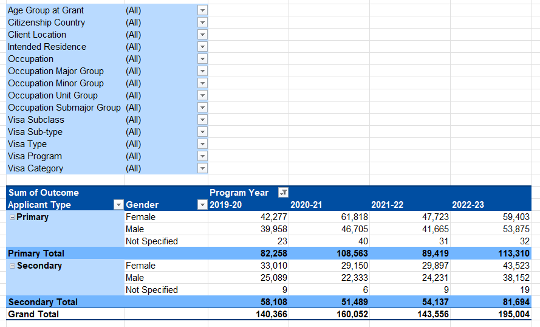
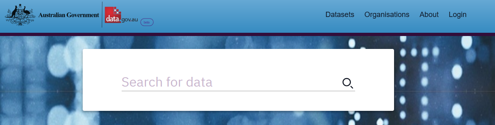
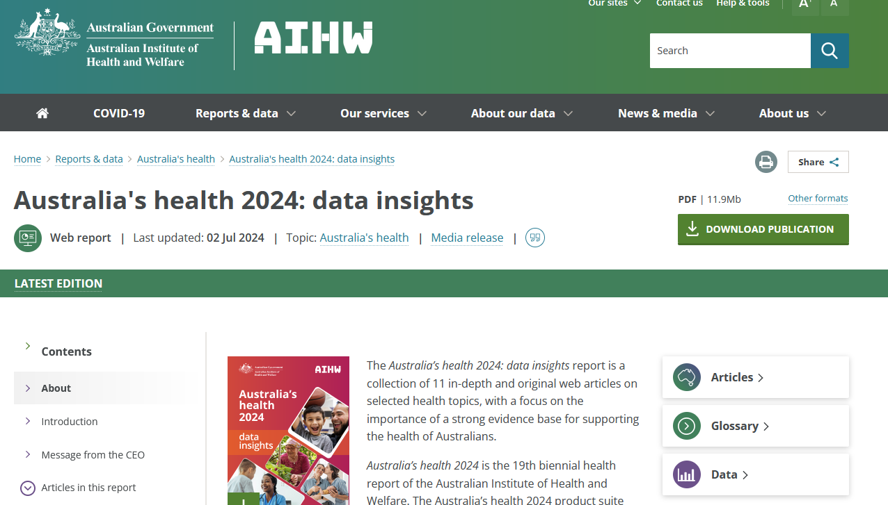
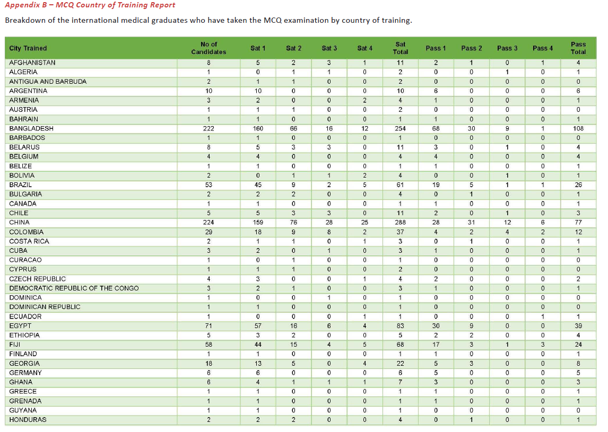
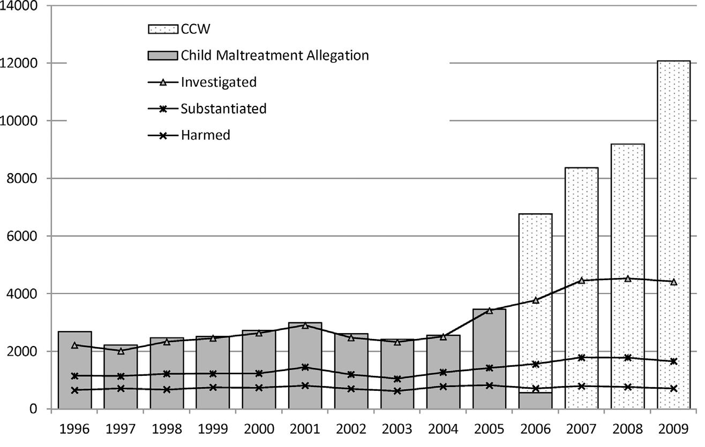

| hosp_id | pat_id | adm | sep | diag |
|---|---|---|---|---|
| CF22 | U1518528 | 2021-04-02 | 2021-04-02 | S00.3 |
| CF22 | U1518528 | 2022-05-21 | 2022-05-24 | K70.3 |
| AN15 | U1216644 | 2023-12-04 | 2023-12-05 | B78.0 |
| AN15 | U1216644 | 2023-11-16 | 2023-11-17 | L20.8 |
| AN15 | U1216644 | 2023-12-17 | 2023-12-20 | L20.8 |
Introduction to Administrative Data
Ben Harrap
2024-09-05
What is administrative data?
Information collected as part of the operation or administration of a program or service.
- Collected by government departments, businesses, other organisations
- Typically used for reporting, monitoring, and evaluation
- Not collected with research as the primary focus
For example:
- Visits to healthcare services (hospital, general practice)
- Government services (Centrelink, Medicare)
- Business records (sales, costs, number of employees)
- Schools (pupils, educational outcomes, demographics)
Hospital visits
Each visit to a hospital typically generates a record with:
- Date of admission
- Date of discharge
- Diagnosis
- Hospital identifier
- Patient identifier
Hospital visits
Australia’s visa program
The Department of Home Affairs provide data on:
- Visa type granted
- Year visa granted
- Occupation of applicant
- Applicant country of citizenship
- Applicant gender
- Applicant age
Australia’s visa program

Where can you find administrative data?
Several places to consider looking
- data.gov.au
- Government reports
- NGOs and peak bodies
- Australian Bureau of Statistics
- Tablebuilder
- Microdata
- DataLab
data.gov.au

Australian Institute of Health and Welfare

Annual reports

Working with admin data
Questions to consider
- What do the variables represent?
- i.e. do the measure what you think they measure.
- How were they collected?
- Who does the data entry, how might this affect the data.
- Who is represented in the data?
- Is it representative of your target population?
- What are the contexts affect the data?
- Policy, legislation, other changes over time.
Data context

Bilson, A., Cant, R.L., Harries, M. and Thorpe, D.H., 2017. Accounting for the increase of children in care in Western Australia: What can a client information system tell us?. Child Abuse & Neglect, 72, pp.291-300.
Data dictionary
Describes the data contained within a dataset, such as:
- Variable names
- Descriptions
- Values they can take on
- Other things to note
If a dataset does not have a data dictionary, consider reaching out to the custodian if something is not clear.
Analysing administrative data
Consider using software that lets you write code:
- R
- Python
- Stata
- (Excel)
Avoid using point-and-click software where possible.
Data linkage
What is it
The linking of individuals or other units across administrative datasets.
For individual-level data, typically handled by data linkage units:
- Using identifiable information to perform linkages
- Create de-identified datasets for users
- Manage relationships with data custodians
In the case of person-level linkages, most data linkage units use probabilistic linkage methods which:
- Use identifying information (e.g. name, date of birth, address)
- Compare these bits of information across datasets
- Use an algorithm to determine the probability that two records belong to the same person
How data linkage works
Birth records
| first_name | last_name | dob |
|---|---|---|
| Tom | Smith | 01-04-2002 |
| Richard | Jones | 24-09-1967 |
| Samantha | Brown | 18-12-1993 |
Tax records
| first_name | last_name | dob |
|---|---|---|
| Thomas | Smith | 01-04-2002 |
| Richard | Jones | 24-09-1967 |
| Samantha | Williams | 14-04-1981 |
Who provide linked data
States and territories:
Who provide linked data
National:
Accessing linked data
Requires an application process
- Takes a long time
- Typically requires several consultations
- Can be costly, depending on the provider
Working with linked data
Same principles as working with individual datasets apply:
- What is being represented in the data
- Who is represented
- How are the variables measured
- What are the contexts that led to the data collection?
Also need to consider:
- Jurisdictional limitations
- Linkage quality
- Data custodian review process
- Data availability/open access
- Joining datasets together
Joining datasets
Hospital admissions
| hosp_id | pat_id | adm | sep | diag |
|---|---|---|---|---|
| CF22 | U1518528 | 2021-04-02 | 2021-04-02 | S00.3 |
| CF22 | U1518528 | 2022-05-21 | 2022-05-24 | K70.3 |
| AN15 | U1216644 | 2023-12-04 | 2023-12-05 | B78.0 |
| AN15 | U1216644 | 2023-11-16 | 2023-11-17 | L20.8 |
| AN15 | U1216644 | 2023-12-17 | 2023-12-20 | L20.8 |
Emergency department admissions
| hosp_id | pat_id | adm | sep | diag |
|---|---|---|---|---|
| CF22 | U1518528 | 2020-02-15 | 2020-02-15 | H65.0 |
| CF22 | U1518528 | 2021-09-12 | 2021-09-12 | K02.1 |
| CF22 | U1518528 | 2022-11-20 | 2022-11-21 | E11.0 |
| CF22 | U1518528 | 2023-01-01 | 2023-01-01 | E71.0 |
| AN15 | U1216644 | 2023-12-16 | 2023-12-16 | L20.8 |
Wrap up
If you have any queries send me an email: benjamin.harrap@anu.edu.au
Further reading:
- Challenges in administrative data linkage for research by Harron et al.
- Hope, hype and harms of Big Data by Scott.
- Data Quality in Electronic Health Records Research: Quality Domains and Assessment Methods by Feder.